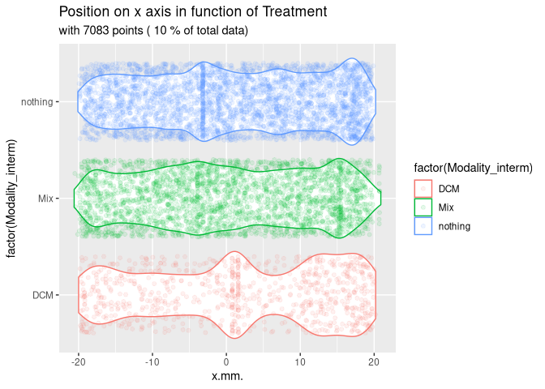

MiteMapTools is a comprehensive R package for importing, analyzing, and visualizing movement data from MiteMap tracking systems. MiteMap is a cost-effective, open-source tool for 2D behavioral tracking of arthropods, particularly useful for studying chemotactic responses and movement patterns in controlled laboratory settings.
About MiteMap
MiteMap is a Raspberry Pi-based automated tracking system designed to monitor arthropod behavior in circular arenas. The system uses infrared imaging to track individual organisms with high temporal resolution (position recorded every 0.2 seconds) and spatial precision. This technology enables researchers to study:
- Chemotactic behavior: How arthropods respond to attractive or repulsive volatile compounds
-
Movement patterns: Analysis of trajectory complexity, speed, and spatial preferences
- Zone preferences: Time allocation between different arena regions
- Behavioral states: Periods of activity vs. immobility
The system consists of a circular arena (typically 40mm diameter) where test subjects are placed with potential stimuli positioned at the arena periphery. High-resolution tracking data allows for detailed quantitative analysis of behavioral responses.
Scientific Background
This package implements methods described in:
Masier, L.‐S., Roy, L., & Durand, J.‐F. (2022). A new methodology for arthropod behavioral assays using MiteMap, a cost‐effective open‐source tool for 2D tracking. Journal of Experimental Zoology Part A: Ecological and Integrative Physiology, 337(4), 333-344. doi:10.1002/jez.2651
The original MiteMap hardware and software can be found at: https://github.com/LR69/MiteMap/tree/MiteMap.v6
Key Features
- Data Import: Seamlessly import MiteMap data from zip archives containing raw tracking files and metadata
- Data Filtering: Clean tracking data by removing artifacts, centering coordinates, and filtering by time/space constraints
- Behavioral Analysis: Calculate metrics like zone preferences, movement speeds, and immobility periods
- Visualization: Create publication-ready plots including trajectory maps, heatmaps, and statistical summaries
- Statistical Testing: Built-in functions for binomial tests of zone preferences with multiple comparison corrections
- Multiple Data Formats: Support for raw positional data and processed zone metrics (HH and CH formats)
Data Formats
The Raw Tracking Data are comprised of: High-resolution positional data with columns: - Time (seconds, recorded every 0.2s) - X coordinate (mm)
- Y coordinate (mm)
[MiteMapTools::import_mitemap()] computes summary metrics including the presence in defined zones (HH and CH formats, see figure @ref(fig:shape)):
Installation
You can install the development version of MiteMapTools from GitHub with:
# install.packages("pak")
pak::pak("adrientaudiere/MiteMapTools")Basic Usage
Data Import and Filtering
This is a basic example showing how to filter and visualize MiteMap data:
library(MiteMapTools)
#> Le chargement a nécessité le package : tidyverse
#> ── Attaching core tidyverse packages ──────────────────────── tidyverse 2.0.0 ──
#> ✔ dplyr 1.1.4 ✔ readr 2.1.5
#> ✔ forcats 1.0.0 ✔ stringr 1.5.2
#> ✔ ggplot2 4.0.0 ✔ tibble 3.3.0
#> ✔ lubridate 1.9.4 ✔ tidyr 1.3.1
#> ✔ purrr 1.1.0
#> ── Conflicts ────────────────────────────────────────── tidyverse_conflicts() ──
#> ✖ dplyr::filter() masks stats::filter()
#> ✖ dplyr::lag() masks stats::lag()
#> ℹ Use the conflicted package (<http://conflicted.r-lib.org/>) to force all conflicts to become errors
#> Le chargement a nécessité le package : readxl
#>
#> Le chargement a nécessité le package : conflicted
# Import MiteMap from folders
MM <- import_mitemap(
system.file("extdata", "mitemap_example", package = "MiteMapTools"),
file_name_column = "File (mite ID)", verbose = FALSE, clean = TRUE
)
# Create violin plots showing position distributions by experimental condition
vioplot_mitemap(MM, "Treatment", prop_points = 0.1)
Data Structure Requirements
A MiteMap experiment folder should contain:
1. Zip archives containing at least 2 files: - Raw data CSV: 3-columns tracking data - Time in seconds (recorded every 0.2s) - X position (mm) - Y position (mm) - PNG heatmap: Visual representation of movement patterns
2. Metadata file (Excel .xlsx or CSV format, optional) with 1 required column: - File_name: Must match the corresponding zip file names. You can use other column name with the parameter file_name_column in [import_mitemap()].